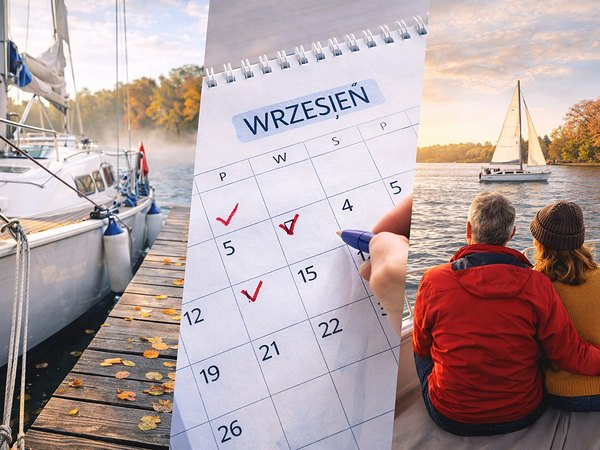

6 min czytania
Czarter jachtu we wrześniu – czy to dobry pomysł?
Wrzesień to dobry moment na czarter jachtu na Mazurach. Większość żeglarzy potwierdza to w prywatnej rozmowie, ale rzadziej przekłada na konkretną rezerwację – bo lipiec i sierpień wydają się bezpieczniejszym wyborem. Tymczasem wrzesień na Mazurach jest spokojniejszy, tańszy i – dla tych, którzy cenią żeglowanie bardziej niż rekreację przy basenie – po prostu bardziej żeglarski.

Kiedy sezon odpuszcza, jeziora nabierają uroku
Po sierpniu coś się zmienia. Nie na wodzie – ta zostaje taka sama – ale wokół niej. Szlak żeglarski, który w lipcu i sierpniu bywa zatłoczony do granic możliwości, po powrocie dzieci do szkoły pustoszeje. Jachty nadal pływają, ale jest ich wyraźnie mniej. Porty mają wolne miejsca. Restauracje przy marinach wracają do spokojniejszego tempa.
W wielu bazach czarterowych sezon trwa przez cały wrzesień, a na jachtach z ogrzewaniem także w październiku. Wrzesień nie jest więc końcem czegoś, lecz przejściem. Zmienia się charakter akwenu i profil żeglarza wybierającego ten termin rejsu. To już nie tylko rodziny szukające plaży, lecz także osoby, które naprawdę chcą żeglować: doświadczeni sternicy oraz załogi korzystające z czarteru bez patentu, szukające spokojniejszych warunków niż w wakacyjnym szczycie.
Pogoda we wrześniu – czego można się spodziewać?
Wrześniowa pogoda na Mazurach jest zmienna. Wieloletnie dane klimatyczne dla rejonu Giżycka wskazują, że średnia maksymalna temperatura we wrześniu wynosi około 18°C, a średnia minimalna około 10°C. Ciepłe dni powyżej 20°C nadal się zdarzają, ale trzeba być gotowym również na chłodne poranki i noce. Na jachcie przydaje się wtedy cieplejszy śpiwór i odzież warstwowa.
Woda oddaje letnie ciepło stopniowo. Na początku miesiąca bywa jeszcze przyjemna, lecz jej temperatura spada wraz z kolejnymi tygodniami i zależy od przebiegu pogody. Kąpiel może być możliwa, ale nie warto traktować jej jako gwarantowanego elementu wrześniowego rejsu.
Ryzyko burz zwykle maleje w porównaniu ze szczytem lata, jednak jesienne fronty mogą przynieść silny wiatr, deszcz i szybkie ochłodzenie. Wrzesień daje dobre warunki do żeglowania, ale wymaga regularnego sprawdzania prognozy i elastycznego planu.
Kilka kwestii, które zachęcają do czarteru jachtu we wrześniu
Wrzesień przekonuje pięcioma konkretnymi argumentami: niższymi cenami czarteru, spokojniejszym ruchem na wodzie i w marinach, dobrymi warunkami do żeglowania, jesiennym obliczem mazurskiego krajobrazu i bardziej kameralną atmosferą po wakacjach. Pierwsze dwa są najbardziej wymierne.
Ile kosztuje czarter jachtu we wrześniu?
Cena to zwykle pierwszy argument pojawiający się w rozmowie o wrześniowym rejsie – i słusznie, bo różnica potrafi być znaczna. Cennik czarteru jachtów po sezonie wakacyjnym wygląda inaczej niż w szczycie lata. Na tym samym jachcie i tym samym akwenie różnica między lipcową a wrześniową ceną dobową może sięgać kilkudziesięciu procent.
Konkretny przykład z cennika 2026: Antila 28.2 w szczycie sezonu kosztuje 800 zł za dobę, a od 12 września ta sama jednostka dostępna jest za 650 zł. To 150 zł różnicy dziennie, czyli niemal 19% mniej za ten sam jacht na tym samym akwenie.
Wrześniowa cena jest niższa niż w szczycie wakacji, ale nie oznacza to, że z rezerwacją warto czekać. W naszej bazie pierwsza połowa września, zwłaszcza weekendy, sprzedaje się relatywnie szybko. Już na początku sierpnia większość terminów weekendowych bywa wyprzedana, dlatego wrześniowy czarter najlepiej zaplanować jeszcze w wakacje. Większa dostępność i oferty last minute dotyczą przede wszystkim końcówki miesiąca.
Wcześniejsza rezerwacja daje największą szansę na wybór konkretnego modelu spośród jachtów żaglowych i motorowych. Zniżka wynikająca z terminu rejsu jest realna i widoczna już przy pierwszym spojrzeniu na cennik, natomiast elastyczność terminów rośnie głównie pod koniec września.
Mniej ruchu na wodzie i w marinach
We wrześniu na mazurskich akwenach wyraźnie spada liczba żeglujących – i widać to na każdym etapie rejsu. Na popularnych szlakach, w okolicach Giżycka, Niegocina czy Sztynortu, różnica w zagęszczeniu między sierpniem a początkiem września jest zauważalna.
Mniej jachtów oznacza więcej przestrzeni do manewrów i spokojniejszą atmosferę podczas wejścia oraz cumowania. Wrześniową różnicę widać przede wszystkim w mniejszym ruchu na wodzie i w marinach. Kolejki do portów nie są na Mazurach typowym zjawiskiem, dlatego nie to stanowi główną przewagę rejsu po sezonie wakacyjnym.
Spokojniejszy charakter września widać też na lądzie. W karczmach i restauracjach przy marinach jest mniej gości niż w wakacyjnym szczycie, a wieczorny postój ma bardziej kameralną atmosferę.
Mazury we wrześniu – co zmienia się po sezonie
Żółte, brązowe i rdzawe liście zaglądają do wody, brzegi jezior wyglądają jak malowane, a widoki, które latem giną w tłumie motorówek i głośnych marinach, stają się dostępne z pokładu jachtu bez tylu zakłóceń. To rodzaj doświadczenia, którego nie da się zwymiarować w złotówkach.
Żeglarz, który pływał po Mazurach w lipcu i wrócił we wrześniu, mówi o zupełnie innym rejsie. Nie o gorszym – o innym. Spokojniejsza żegluga pozwala lepiej cieszyć się zatokami, wąskimi kanałami i akwenami z dala od głównych szlaków. Planowanie bywa bardziej elastyczne dzięki mniejszemu ruchowi na wodzie, choć nadal warto wcześniej sprawdzać godziny pracy portów i dostępność usług.
Dostępność jachtów zależy od części miesiąca. Popularne modele, takie jak Antila 28.2 czy Maxus 28, na pierwszą połowę września i weekendy rezerwowane są szybko. Większy wybór z krótszym wyprzedzeniem pojawia się zwykle dopiero pod koniec miesiąca, dlatego przy konkretnych wymaganiach dotyczących wielkości, wyposażenia lub liczby kabin warto dokonać rezerwacji jeszcze w wakacje.
Czego wymaga wrześniowy rejs? Co zabrać i jak go zaplanować
Wrzesień na wodzie nie wymaga specjalistycznego wyposażenia. Wymaga za to kilku przemyślanych decyzji – zarówno przy pakowaniu, jak i przy planowaniu etapów.
Przygotowanie sprzętu zaczyna się od odzieży:
- Warstwy bazowe i termiczne – zamiast jednej grubej kurtki warto postawić na system warstw, który można dostosować do pogody zmieniającej się kilka razy dziennie.
- Odzież nieprzemakalna – wiatr i deszcz pojawiają się we wrześniu częściej niż latem; membranowa kurtka i spodnie to podstawa, nie opcja.
- Ciepłe buty na pokład – wieczory na wodzie potrafią być chłodne, szczególnie przy silniejszym wietrze lub po deszczu.
Wybór jachtu we wrześniu powinien uwzględniać ogrzewanie kabiny. Modele z ogrzewaniem postojowym eliminują problem zimnych nocy i poranków i wyraźnie wydłużają komfortowy sezon.
Pełną listę znajdziecie w naszym artykule: Co zabrać na rejs po Mazurach?
Kabina bez ogrzewania po zachodzie słońca potrafi jednak skutecznie zepsuć wyjazd – i to element, który warto zweryfikować przed finalizacją rezerwacji.
Planowanie trasy też wygląda we wrześniu nieco inaczej niż latem. Kilka rzeczy warto sprawdzić przed wypłynięciem:
- Godziny działania portów i przystani – część obiektów ogranicza obsługę po sezonie lub zmienia harmonogram pracy.
- Dostępność sklepów i zaopatrzenia – mniejsze miejscowości przy szlaku żeglarskim mogą mieć ograniczoną ofertę poza szczytem sezonu.
- Aktualna prognoza pogody na cały okres rejsu – zmienność we wrześniu wymaga elastycznego podejścia do harmonogramu i gotowości na korektę planów.
Wrześniowy rejs warto zaplanować z pewnym zapasem czasu między etapami. Nie dlatego, że coś grozi, ale dlatego, że spokojniejsze Mazury na to pozwalają. I naprawdę warto to wykorzystać.
Wrzesień to bardzo dobry moment dla tych, którzy cenią żeglowanie bardziej niż wakacyjny gwar. Niższe ceny czarteru jachtów, spokój na wodzie, inne krajobrazy i wyraźnie większa swoboda na akwenie sprawiają, że rejs po sezonie bywa lepiej zorganizowany i przyjemniejszy niż niejedna letnia wyprawa.
Czytaj dalej
- Czarter jachtu – kompletny przewodnik Czarter jachtu na Mazurach to jeden z najlepszych sposobów na spędzenie urlopu blisko natury, z dala od tłumów i w swoim własnym tempie. Jednocześnie dla wielu osób — zwłaszcza przy pierwszym rejsie — jest to temat pełen pytań, niepewności i obaw: jaki jacht wybrać, ile to naprawdę kosztuje, jakie formalności trzeba spełnić i jak uniknąć typowych błędów.
- Jaki jacht wybrać dla pary, rodziny lub grupy Wybór jachtu ma realny wpływ na to, jak będzie wyglądał cały rejs po Mazurach. Zbyt mała jednostka ogranicza komfort, zbyt duża potrafi generować niepotrzebny stres, szczególnie przy manewrach portowych.
- Co zabrać na rejs żeglarski na Mazurach? Praktyczny poradnik Przestrzeń na pokładzie podczas rejsu żaglówką jest ograniczona. Jak to rozplanować, aby nie zabrać za ani dużo ani za mało? Sprawdź, co naprawdę mieć ze sobą na rejsie żeglarskim po Mazurach.
Wybrałeś termin?
Sprawdź, które jachty są wolne, albo zadzwoń do biura.